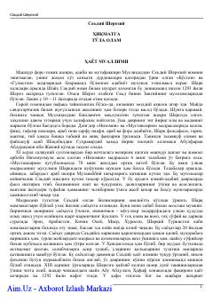

HTBuyuk shoir va mutafakkir Saʼdiy Sheroziyning hayoti va ijodiga bagʻishlangan asar.
Ushbu kitob buyuk форс-тожик шоиri ва мутафаккири Муслиҳиддин Саъдий Шерозийнинг ҳаёт йўли, ижодий фаолияти ҳамда унинг машҳур "Бўстон" ва "Гулистон" асарлари таҳлилига бағишланган. Муаллиф донишманднинг бошидан кечирган саёҳатлари, илм олиш йўли ва Шарқ адабиётидаги ўрни ҳақида батафсил маълумот беради.